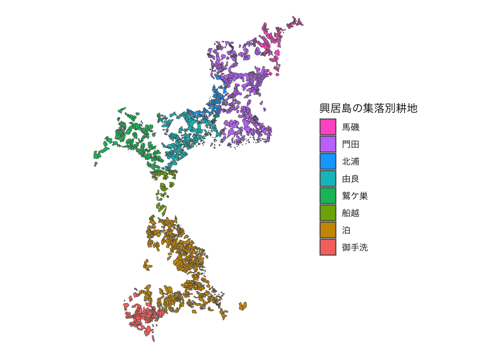
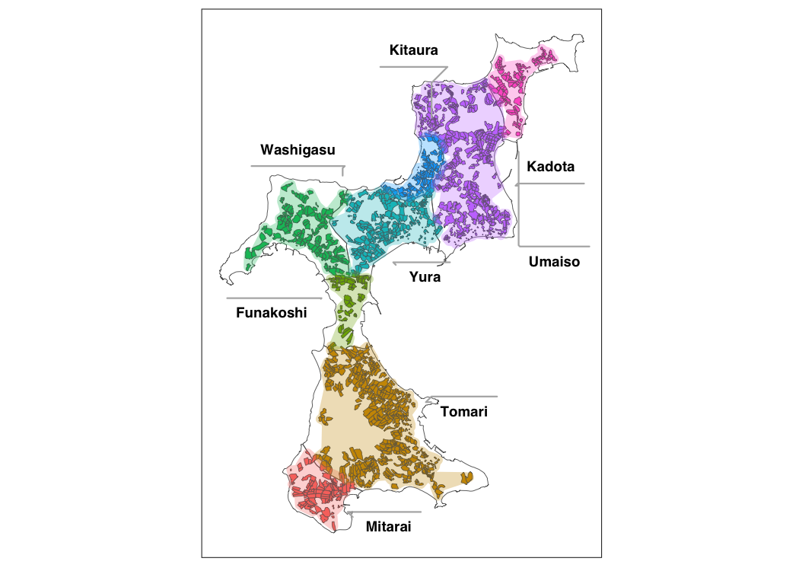
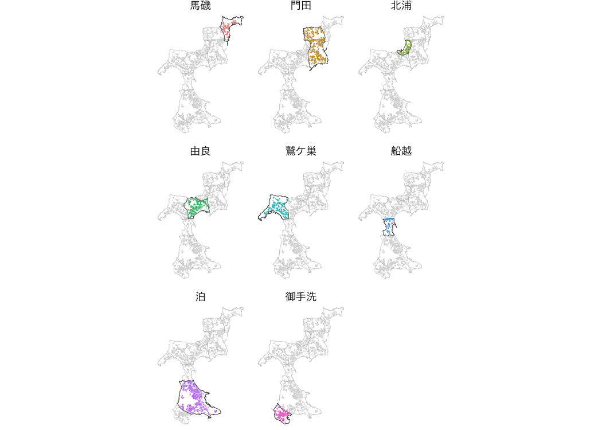

The fude package provides utilities to facilitate handling of Fude Polygon data downloadable from the Ministry of Agriculture, Forestry and Fisheries (MAFF) website. The word fude is a Japanese counter suffix used when referring to land parcels.
Obtaining Data
Download the Fude Polygon data from the following release site of MAFF (only Japanese is available).
Installation
You can install the released version of fude from CRAN with:
install.packages("fude")Or the development version from GitHub with:
# install.packages("devtools")
devtools::install_github("takeshinishimura/fude")Usage
You can let R read the downloaded ZIP file without unzipping it.
Those who wish to use a mouse or trackpad for file selection, which is especially common among R beginners, can do the following.
d <- read_fude(file.choose())You can rename the local government codes to the Japanese municipality names for easier handling.
d2 <- rename_fude(d)
#> 2022_382019 -> 2022_松山市
#> 2022_382027 -> 2022_今治市
#> 2022_382035 -> 2022_宇和島市
#> 2022_382043 -> 2022_八幡浜市
#> 2022_382051 -> 2022_新居浜市
#> 2022_382060 -> 2022_西条市
#> 2022_382078 -> 2022_大洲市
#> 2022_382108 -> 2022_伊予市
#> 2022_382132 -> 2022_四国中央市
#> 2022_382141 -> 2022_西予市
#> 2022_382159 -> 2022_東温市
#> 2022_383562 -> 2022_上島町
#> 2022_383864 -> 2022_久万高原町
#> 2022_384011 -> 2022_松前町
#> 2022_384020 -> 2022_砥部町
#> 2022_384224 -> 2022_内子町
#> 2022_384429 -> 2022_伊方町
#> 2022_384844 -> 2022_松野町
#> 2022_384887 -> 2022_鬼北町
#> 2022_385069 -> 2022_愛南町It can also be renamed to romaji instead of Japanese.
d3 <- d |> rename_fude(suffix = TRUE, romaji = "title", quiet = TRUE)
names(d3)
#> [1] "2022_Matsuyama-shi" "2022_Imabari-shi" "2022_Uwajima-shi"
#> [4] "2022_Yawatahama-shi" "2022_Niihama-shi" "2022_Saijo-shi"
#> [7] "2022_Ozu-shi" "2022_Iyo-shi" "2022_Shikokuchuo-shi"
#> [10] "2022_Seiyo-shi" "2022_Toon-shi" "2022_Kamijima-cho"
#> [13] "2022_Kumakogen-cho" "2022_Matsumae-cho" "2022_Tobe-cho"
#> [16] "2022_Uchiko-cho" "2022_Ikata-cho" "2022_Matsuno-cho"
#> [19] "2022_Kihoku-cho" "2022_Ainan-cho"You can download the agricultural community boundary data corresponding to the Fude Polygon data from the MAFF website https://www.maff.go.jp/j/tokei/census/shuraku_data/2020/ma/ (only Japanese is available).
b <- get_boundary(d)You can easily draw a map combining Fude Polygons and agricultural community boundaries.
library(ggplot2)
db <- combine_fude(d, b, city = "松山市", community = "由良|北浦|鷲ケ巣|門田|馬磯|泊|御手洗|船越")
ggplot() +
geom_sf(data = db$fude_split, aes(fill = RCOM_NAME)) +
theme_void()
出典：農林水産省「筆ポリゴンデータ（2022年度公開）」および「農業集落境界データ（2020年度）」を加工して作成。
Polygon data near the boundaries between communities may be split. To avoid this, do the following.
ggplot() +
geom_sf(data = db$community, fill = NA) +
geom_sf(data = db$fude, aes(fill = RCOM_NAME)) +
guides(fill = guide_legend(reverse = TRUE, title = "興居島の集落別耕地")) +
theme_void() +
theme(text = element_text(family = "HiraKakuProN-W3"))
出典：農林水産省「筆ポリゴンデータ（2022年度公開）」および「農業集落境界データ（2020年度）」を加工して作成。
Polygons located on community boundaries are not split, but are assigned to one of the communities. If this automatic assignment needs to be modified, ad hoc coding is required.
The gghighlight package allows for a wider range of expression.
library(gghighlight)
ggplot() +
geom_sf(data = db$community, aes(fill = RCOM_NAME), alpha = 0) +
geom_sf(data = db$fude, aes(fill = RCOM_NAME), linewidth = 0) +
gghighlight() +
facet_wrap(vars(RCOM_NAME)) +
theme_void() +
theme(legend.position = "none",
text = element_text(family = "HiraKakuProN-W3"))
Source: Created by processing the Ministry of Agriculture, Forestry and Fisheries, Fude Polygon Data (released in FY2022) and Agricultural Community Boundary Data (FY2020).
There are 8 types of objects obtained by combine_fude() as follows.
names(db)
#> [1] "fude" "fude_split" "community" "community_union"
#> [5] "ov" "lg" "pref" "source"If you want to be particular about the details of the map, for example, execute the following code.
library(ggrepel)
library(cowplot)
db <- combine_fude(d, b, city = "松山市", old_village = "興居島", community = "^(?!釣島).*")
minimap <- ggplot() +
geom_sf(data = db$lg, aes(fill = fill)) +
geom_sf_text(data = db$lg, aes(label = city_kanji), family = "HiraKakuProN-W3") +
gghighlight(fill == 1) +
geom_sf(data = db$community_union, fill = "black", linewidth = 0) +
theme_void() +
theme(panel.background = element_rect(fill = "aliceblue")) +
scale_fill_manual(values = c("white", "gray"))
mainmap <- ggplot() +
geom_sf(data = db$community, fill = "white") +
geom_sf(data = db$fude, aes(fill = RCOM_NAME)) +
geom_point(data = db$community, aes(x = x, y = y), colour = "gray") +
geom_text_repel(data = db$community,
aes(x = x, y = y, label = RCOM_NAME),
nudge_x = c(-.01, .01, -.01, -.012, .005, -.01, .01, .01),
nudge_y = c(.005, .005, 0, .01, -.005, .01, 0, -.005),
min.segment.length = .01,
segment.color = "gray",
size = 3,
family = "HiraKakuProN-W3") +
theme_void() +
theme(legend.position = "none")
ggdraw(mainmap) +
draw_plot(
{minimap +
geom_rect(aes(xmin = 132.47, xmax = 133.0,
ymin = 33.72, ymax = 34.05),
fill = NA,
colour = "black",
size = .5) +
coord_sf(xlim = c(132.47, 133.0),
ylim = c(33.72, 34.05),
expand = FALSE) +
theme(legend.position = "none")
},
x = .7,
y = 0,
width = .3,
height = .3)This package may be beneficial, especially for R beginners, when simply wanting to draw agricultural community boundaries.
library(dplyr)
library(ggrepel)
db <- combine_fude(d, b, city = "西予市", old_village = "遊子川")
ggplot() +
geom_sf(data = db$pref, fill = NA) +
geom_sf(data = db$lg, fill = "gray") +
gghighlight(fill == 1,
unhighlighted_params = list(
alpha = .05
)) +
geom_sf(data = db$ov |> filter(fill == 1), fill = "black") +
geom_sf_text(data = db$lg |> filter(fill == 1),
aes(label = city_kanji),
size = 3,
nudge_x = -.025, nudge_y = -.025,
family = "HiraKakuProN-W3") +
geom_point(data = db$community_union, aes(x = x, y = y), colour = "black") +
geom_text_repel(data = db$community_union,
aes(x = x, y = y),
label = "遊子川地区",
nudge_x = .3, nudge_y = -.025,
segment.color = "black",
size = 3,
family = "HiraKakuProN-W3") +
theme_void()
出典：農林水産省「筆ポリゴンデータ（2022年度公開）」および「農業集落境界データ（2020年度）」を加工して作成。
If you want to use mapview(), do the following.
library(mapview)
db1 <- combine_fude(d, b, city = "伊方町")
db2 <- combine_fude(d, b, city = "八幡浜市")
db3 <- combine_fude(d, b, city = "西予市", old_village = "三瓶|二木生|三島|双岩")
db <- bind_fude(db1, db2, db3)
mapview::mapview(db$fude, zcol = "RCOM_NAME", layer.name = "農業集落名")